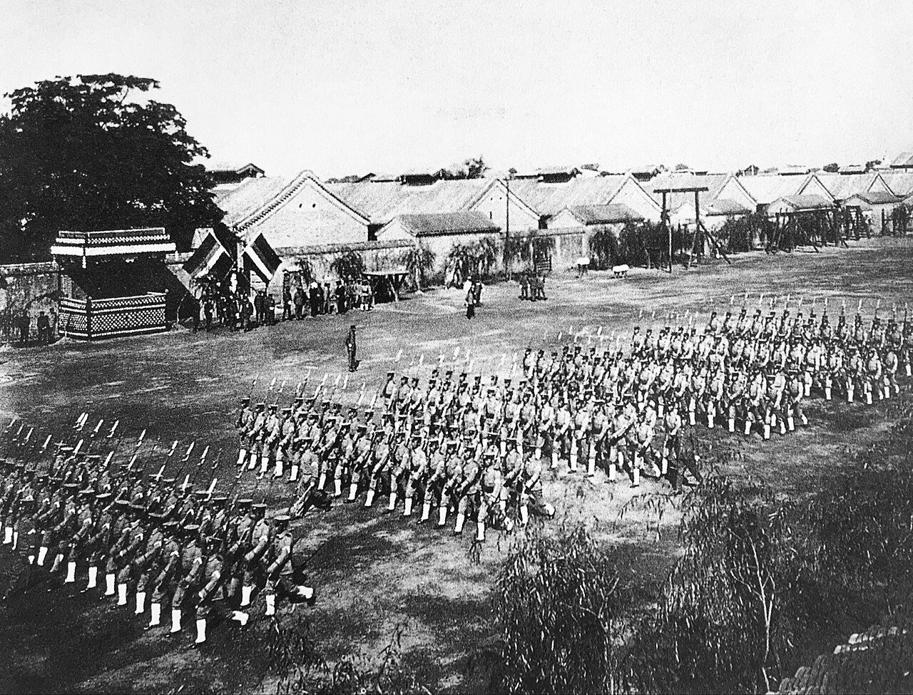
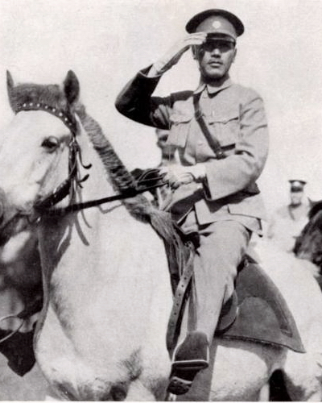

Sin emperador y sin un poder central capaz de reemplazarlo, China se fragmentó en feudos militares que se peleaban las aduanas y emitían su propia moneda. Y sin embargo, en medio de ese caos político, una guerra lejana en Europa le regaló a los empresarios chinos una década dorada que la historiografía oficial casi nunca cuenta.
Toca cada acto para expandirlo.
La Revolución de Wuchang en octubre de 1911 y la abdicación de la dinastía Manchu Qing en febrero de 1912 dieron paso a la proclamación de la República de China, poniendo fin a más de 2,000 años de autocracia monárquica feudal. Pero la nueva república heredó una estructura económica lastrada por un siglo de concesiones e intervenciones extranjeras: un Estado "semicolonial" donde la banca, la navegación, los ferrocarriles y la minería seguían fuertemente controlados por capitales occidentales y japoneses al amparo de los tratados desiguales.
La burguesía nacional naciente y las fuerzas campesinas carecían de la fuerza organizativa para consolidar un sistema democrático liberal independiente. Tras la brevedad de Sun Yat-sen en la presidencia provisional, el mando ejecutivo recayó en Yuan Shih-k'ai, cuya deriva autocrática —reprimió a la oposición del Kuomintang, financió su régimen con préstamos extranjeros no autorizados por el parlamento y finalmente intentó autoproclamarse emperador— desmanteló el frágil orden institucional republicano antes de que pudiera echar raíces.
La muerte de Yuan Shih-k'ai en junio de 1916 dejó un vacío de poder central irreversible que hizo estallar la era de la fragmentación política y los señores de la guerra. Las fuerzas de la antigua facción de Peiyang se dividieron en feudos regionales y clanes militares rivales (Zhihli, Anhui, Fengtien) que lucharon de forma encarnizada por el control del gobierno central en Pekín.

Los caudillos militares incautaron los ingresos de aduanas y ferrocarriles, impusieron gravámenes internos arbitrarios y forzaron el cultivo del opio para financiar sus ejércitos privados.
Muchos señores de la guerra crearon bancos locales para emitir papel moneda sin respaldo de plata, provocando inflación regional y destruyendo el crédito local.
Pekín contrató créditos ruinosos con potencias extranjeras — como los Préstamos de Nishihara (145 millones de yenes) negociados con Japón en 1918 — a cambio de financiamiento militar interno.
Pero en medio de ese colapso estatal, el estallido de la Primera Guerra Mundial (1914–1918) abrió una grieta imprevista en el dominio mercantil extranjero: la reorientación industrial europea hacia el frente redujo las importaciones a China, y el precio mundial de la plata se duplicó entre 1914 y 1919, abaratando la maquinaria importada para las firmas locales.
La "edad de oro" del empresariado privado chino alcanzó su ritmo más alto justo cuando el Estado central estaba más fragmentado — una paradoja que la historiografía tradicional tardó décadas en reconocer.
Empresas privadas chinas ganaron cuota de mercado frente a firmas extranjeras en hilados de algodón, molinos de harina, tabaco y fósforos, mientras los bancos nativos (ch'ien-chuang) convivían con una nueva banca comercial moderna, reduciendo el efectivo metálico del 65% a menos del 16% de la masa monetaria en circulación.
La indignación nacionalista por la Decisión de la Conferencia de Paz de París de entregar las concesiones de Shandong a Japón detonó el Movimiento del 4 de Mayo de 1919: estudiantes, empresarios y obreros urbanos —ya entre 2 y 3 millones hacia 1919, producto del propio boom industrial— se unieron en huelgas bajo la consigna de "salvar la patria". Esa efervescencia aceleró la integración del marxismo con el movimiento obrero, llevando a la fundación del Partido Comunista de China en 1921.
Entre 1923 y 1927, el Primer Frente Unido entre el PCCh y el Kuomintang, bajo el liderazgo de Sun Yat-sen y el respaldo de la Internacional Comunista, lanzó la Expedición al Norte para erradicar militarmente a las facciones de señores de la guerra, derrotando a caudillos como Wu Peifu y Sun Chuanfang.
A medida que la marcha avanzaba, el generalísimo Chiang Kai-shek monopolizó el mando político y militar. El 12 de abril de 1927 ejecutó en Shanghái un golpe y una masacre que rompió la alianza revolucionaria, exterminó a miles de comunistas y líderes sindicales, e instauró un régimen autoritario de derecha con base en Nanjing.

El régimen de Nanjing sustituyó la hegemonía de los antiguos caudillos del Norte, reestructurando el poder bajo la dictadura de los grandes terratenientes y la burguesía compradora, mientras los privilegios aduaneros y territoriales de las potencias extranjeras continuaban bajo su tutela negociada.
El PCCh, severamente purgado, asumió la resistencia armada independiente mediante la Insurrección de Nanchang (1 de agosto de 1927) y el Levantamiento de la Cosecha de Otoño liderado por Mao Zedong, estableciendo las primeras fuerzas del Ejército Rojo y la base revolucionaria rural en los montes Jinggang.
La "edad de oro" industrial dejó un dualismo económico estructural: un sector urbano costero dinámico y monetizado frente a un sector rural agrario abandonado, golpeado por la extracción de los señores de la guerra y la explotación de los arrendamientos de tierra — la brecha campo-ciudad que China administra hasta hoy.
El poder nace del fusil. Tras la traición de 1927, Mao Zedong formuló en la Reunión de Emergencia del 7 de Agosto la máxima de que "el poder político nace del cañón de un fusil". Este principio fijó la subordinación institucional absoluta del Ejército Popular de Liberación al Partido Comunista, un pilar que rige la estructura del Estado chino en el presente, y refuerza el imperativo de Xi Jinping de eliminar cualquier faccionalismo o amenaza de secesión regional.
La revisión económica de Thomas Rawski. La historiografía económica contemporánea ha desmentido la tesis tradicional del estancamiento absoluto durante la era republicana temprana: las fuerzas del mercado, el espíritu empresarial privado y el sistema bancario chino poseían vitalidad propia incluso sin un Estado central fuerte. Las redes comerciales y financieras surgidas entre 1912 y 1927 sentaron la base sobre la cual el Gobierno Nacionalista de Nankín pudo implementar sus reformas monetarias de los años treinta.
La lección que ambas dimensiones comparten: la fragmentación política erosiona la soberanía, pero el sector privado chino puede experimentar transformaciones competitivas aceleradas cuando se abren espacios de mercado — y esa es la memoria que hoy legitima tanto el control centralizado del PCCh como su tolerancia calculada al capital privado.
Desde 1927, el control absoluto del Partido sobre el ejército —y no al revés— es una regla constitucional no negociable, heredada directamente de la masacre de Shanghái.
La "edad de oro" de 1912-1920 demostró que el empresariado chino puede crecer incluso sin un poder central fuerte — una lección que hoy convive, tensa, con el control del Partido-Estado sobre la economía.
El trauma de los señores de la guerra explica por qué Pekín trata cualquier atisbo de autonomía regional o faccionalismo interno como una amenaza existencial.
Contenido curado por el equipo de Club Kongzhi a partir de fuentes académicas reunidas en los cuadernos de NotebookLM dedicados a la República y la Era de los Señores de la Guerra, dimensiones política y económica.